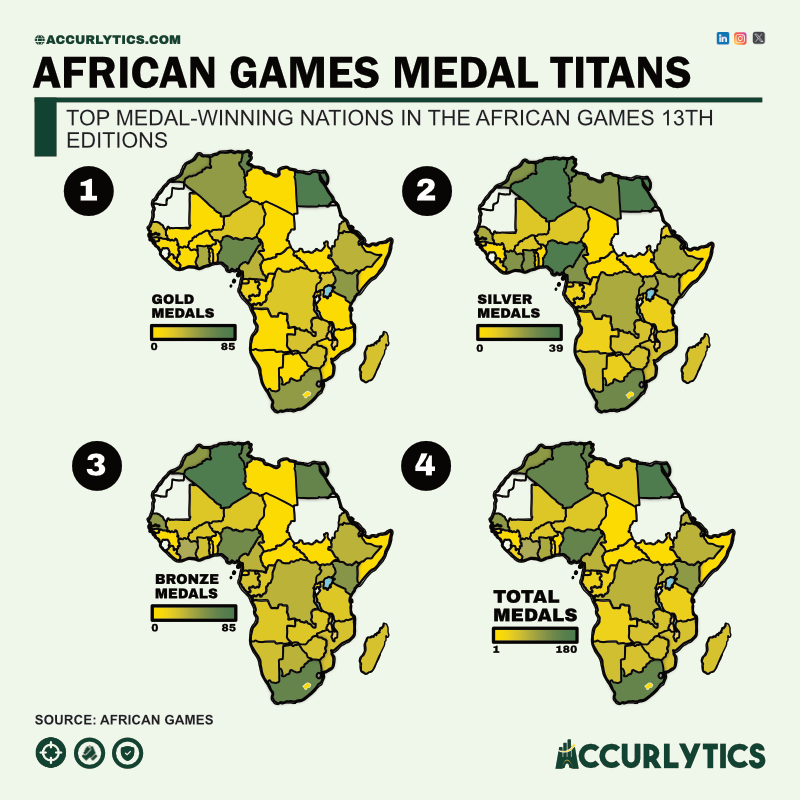
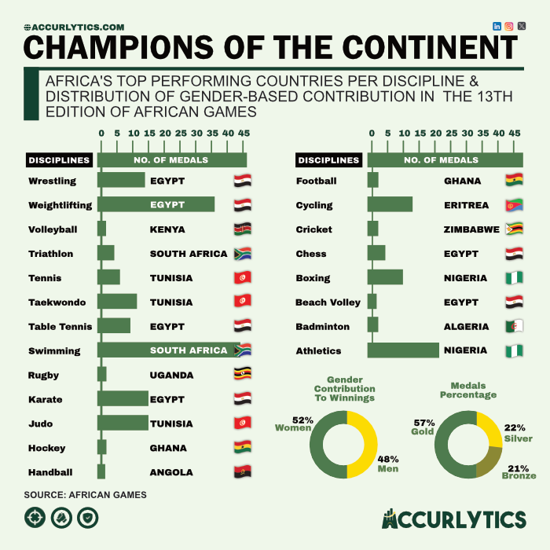

Unlocking the Triumphs of the African Games: A Data Story
In the bustling arena of athletic prowess, the 13th Edition African Games stood as a testament to the continent's sporting spirit, where nations vied for glory, camaraderie, and the pride of their people. As the dust settles and the medals glitter, let's delve into the captivating data that unveils the triumphs and achievements of the competitors.
Egypt's dominant performance, securing 192 medals with a significant count of gold, not only highlights their athletic expertise but also potentially indicates substantial investment in sports infrastructure and talent development. Nigeria's impressive collection of 121 medals demonstrates resilience and also suggests the depth of their athlete pool and strategic focus on key disciplines, making them dominant in almost all of them.
Again, South Africa's third-place finish signifies a successful integration of historical dominance and modern-day competitiveness, marking a seamless transition from past victories to current successes. Algeria's strategic focus on clinching the most silver medals showcases their adaptability and consistency across various sports disciplines, indicative of effective strategic planning within their sports programs. Furthermore, Ghana's impressive sixth-place finish, especially as the host nation, opens up an analytical discussion on the influence of home advantage and morale boost on performance metrics, as this edition marked a peak performance for their athletes.

Champions of The Games Disciplines
In the 13th Edition of the African Games hosted in Ghana, a detailed examination of discipline-specific performance highlights notable champions emerging across various sports as shown in the chart below. Egypt emerges as a formidable force, showcasing dominance across seven disciplines. In disciplines such as wrestling, weightlifting, table tennis, karate, chess, beach volleyball, and arm wrestling, Egypt's athletes demonstrated exceptional prowess, securing top honors and solidifying their status as frontrunners in these events. Following closely behind, Tunisia emerges as a strong contender, particularly excelling in tennis, taekwondo, and judo. Tunisian athletes displayed remarkable skill and determination, claiming victory and earning accolades in these disciplines. Their consistent performance across these events underscores the nation's dedication to excellence in sports and the effectiveness of their training programs. subsequently, South Africa, Ghana and Nigeria ranked 1st in two disciplines each.
In the achievement of the top rank in various disciplines during the 13th Edition of the African Games in Ghana, women emerged as significant contributors, accounting for 52% of the overall share. Their notable presence and performance underscored the growing impact and representation of female athletes in competitive sports. Further analysis reveals that among the medals awarded to attain this top rank, an impressive 57% were gold, indicating a predominance of first-place finishes among the winning athletes. Silver medals constituted 22% of the total, while bronze medals made up 21%. This distribution highlights the remarkable caliber of competition witnessed across disciplines, with a majority of athletes striving for and achieving top-tier success. Such insights not only celebrate the achievements of athletes but also shed light on the evolving landscape of gender parity and excellence in sports.
